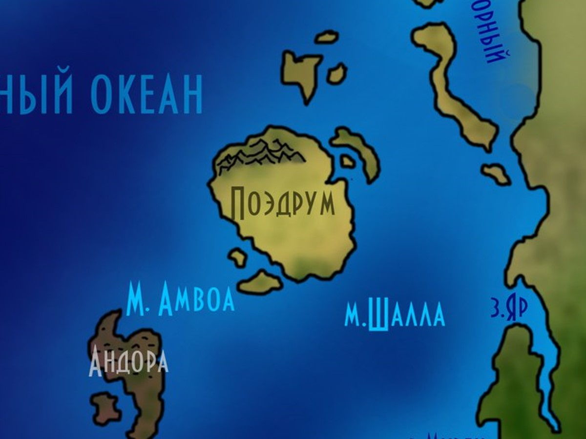
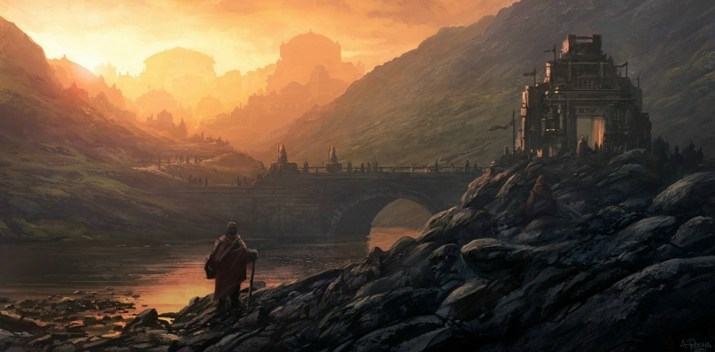

Поэдрум
Поэдрум — остров южных песков, где под палящим зноем Вздоха Вселенной рождались и умирали герои, предатели, головорезы и спасители. Народ Поэдрума объединился под знамёнами таинственного Ордена Воли, победил общего врага и вернул себе свободу, данную всем народам по праву рождения.
Карта Поэдрума
Южные пески, зной и вольные ветры
images/poedrum-map.jpgРекомендуемый размер:
1200 × 900 px (4:3)

Составлена по рассказам вольных капитанов и хранителей Ордена. Там, где линии расходятся с песком, — верьте песку.
Народ и свобода
Народу Поэдрума хватило решимости объединиться под знаменами таинственного Ордена Воли, победить общего врага и забрать свою законную, данную всем народам по факту рождения, свободу. Здесь, в южных песках, под палящим зноем Вздоха Вселенной, в пыли тысячи войн рождались и умирали великие люди, всегда отличавшиеся бесстрашием и хитростью.
Герои, предатели, головорезы, спасители, добро и зло всегда рождались и умирали, сливаясь с бесконечными песками, камнями и землёй этих восточных территорий. Как остров держался на воле местного народа, который всегда был един в своём порыве и стремлениях, так он и остался. И, как они надеются, будет стоять ещё тысячи лет.
Орден Воли
Орден Воли остаётся для внешнего мира тайной. Известно лишь, что именно под его знамёнами народ Поэдрума сумел объединиться, победить общего врага и вернуть себе свободу. Орден не стремится к открытой власти — его сила в том, что он дал людям песков общую цель и общее слово, которое они держат.

Южные пески
Поэдрум лежит среди южных песков, под палящим зноем Вздоха Вселенной — так здесь называют иссушающий ветер, что веками обтачивал камни и кости. Пыль тысячи войн пропитала эту землю; бесконечные пески, камни и земля восточных территорий хранят память о каждом, кто пал здесь, слившись с ними навсегда.
Но именно эта суровая земля выковала народ, который всегда был един в своём порыве и стремлениях — и остался таким. Вольные ветры юга не терпят цепей, и Поэдрум, как и его люди, живёт по этому закону.
Облик острова
Поэдрум — это остров, где свобода не дар, а право, отвоёванное однажды и удержанное навсегда. Здесь не любят чужаков, приходящих с пустыми руками, но щедро принимают тех, кто уважает волю и слово. Пусть же он стоит ещё тысячи лет — как надеются его люди.
География Мериона · Остров Поэдрум